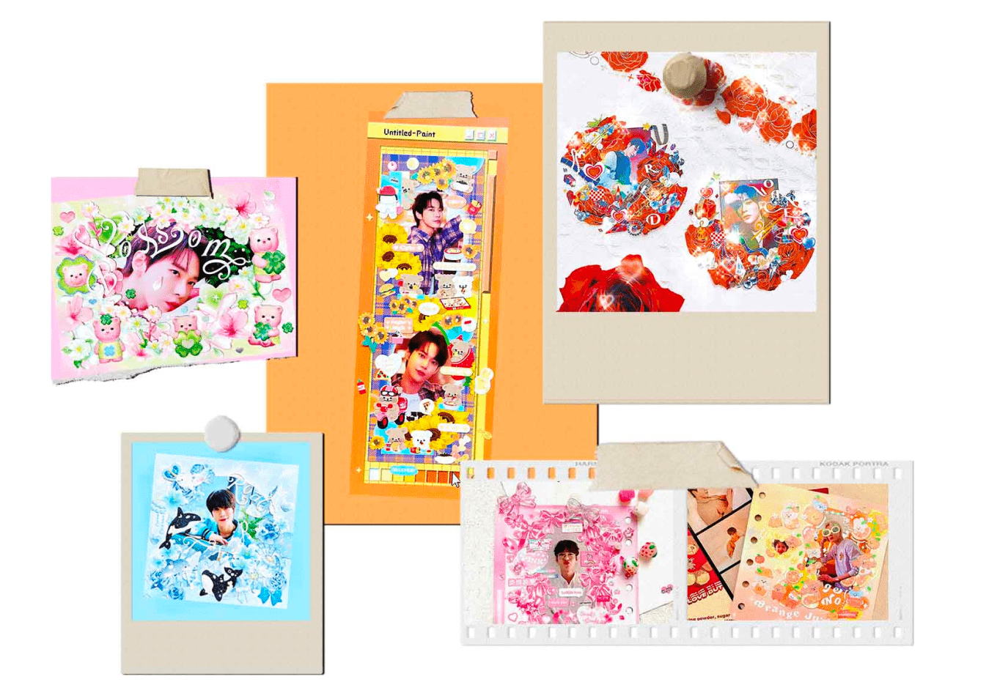

Jenni
Going deeper for my website
There are two problems statement in the context, but since entry level users and experienced users have almost the same actions in the process (they just differ in some emotions and detailed tasks), we can try to combine their needs to define functions for the websites.
The problem statements are:
How might we make entry level users searching for further development address the problem of finding comprehensive information of the stickers and appropriate pack for some certain styles, to achieve the goal of saving time and having the ability to create good-looking cards.
How might we make experienced users address the problem of finding comprehensive information of the stickers for some certain styles and a user-friendly place to show their artworks, to achieve the goal of saving time and making more people see their works.
In my last assignment, I explained why they are both essential, you may check it here. According to the current journey map and story map, we can conclude that their common needs are (1)getting the information of the stickers & artworks classified in different styles, (2)getting suggestions on layout and sticker arrangements, and (3)joining in a community focusing on card-decoration.
So my website will have the following functions: (1)divide the stickers and artworks in different styles and then list out their information; (2)create a platform where users can pay to get some stylized customization on both layout design and sticker packs, this part is the core thing of the business model; (3)create a community where people can talk about different content in specific sections.
The usability test will be conducted to check if users can be attracted to use my website, if they can carry out some function-oriented tasks (especially about the order and purchase process) and how do they feel about the service & the access to the service.
You may get more information by clicking here to view my journals.